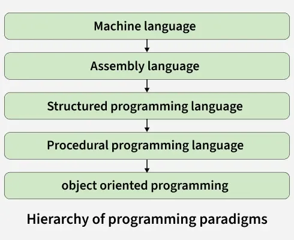
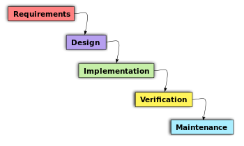
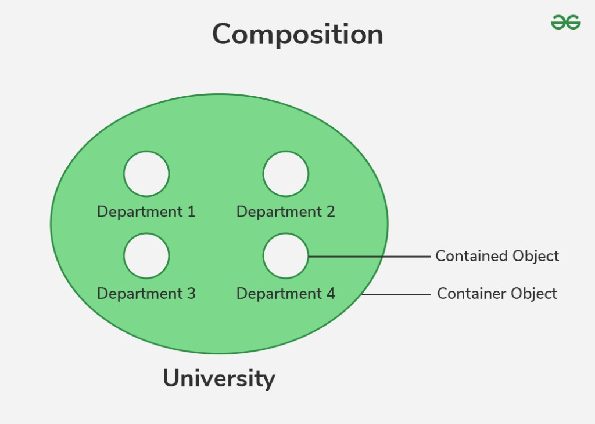

5.15 Object-Oriented Design
Object-oriented design (OOD) is a design technique that solves software problems by building a system of interrelated objects. It uses the concepts of classes and objects, encapsulation, inheritance, and polymorphism to model real-world entities and their interactions. A system architecture that is modular, adaptable, and simple to understand and maintain is produced using OOD.
OOD is orthogonal to function-oriented design: where FOD asks "what does the program do?", OOD asks "what entities exist and how do they interact?"

Object-oriented system
An object-oriented system is a development model where objects are used to specify different aspects of an application. Everything — data, information, processes, functions, and so on — is considered an object. The software developer focuses on the task, not on the tools, and organises the application on the basis of object-oriented concepts. The behaviour of the system depends on the collaboration between different objects.
Phases of object-oriented software development
Object-oriented development is a structured approach to design and build software systems using the principles of object-oriented programming. The process promotes modularity and reusability, helping developers manage the system throughout the lifecycle.

1. Object-oriented analysis (OOA)
- OOA is the initial phase that focuses on understanding user requirements in terms of objects.
- It helps in understanding, organising, and defining the problem before moving into design and implementation.
- OOA focuses on how the model should function and how it must be developed.
- The output is a clear and detailed understanding of the problem statement and system requirements.
2. Object-oriented design (OOD)
OOD is the key phase that follows OOA. It creates a well-structured design based on the object-oriented paradigm, turning the models and insights from analysis into an efficient software system. OOD includes both:
- System design: Designs the software system based on information gathered during analysis. It provides the roadmap for how various components and modules work together according to the proposed architecture.
- Object design: Focuses on the detailed design of individual classes and objects — specifying how they are implemented. Object design is the foundation of writing actual code and must ensure the system is efficient, maintainable, and extensible.
3. Object-oriented implementation
- Implementation translates the design model from OOA and OOD into actual code using an OOP language such as Java, C++, or Python.
- Classes and objects defined during design are coded with their attributes, methods, and relationships.
Example — Book class (implementation)
class Book:
def __init__(self, title, author, available=True):
self.title = title
self.author = author
self.available = available
# Book objects
book1 = Book("XYZ", "Ashutosh", True)
book2 = Book("Yzx", "Amit", False)| Book class | Details |
|---|---|
| Attributes | title, author, available |
| Objects | book1 (XYZ, Ashutosh, available), book2 (Yzx, Amit, not available) |
4. Object-oriented testing
- Testing is the final phase that verifies and validates the functionality of the software system.
- It tests the actual code and performance of the object-oriented system using specialised techniques.
- It encompasses unit testing, integration testing, system testing, and more.
- Object-oriented testing ensures the reliability and quality of the software system.
Core OOD concepts
Object-oriented design includes a number of fundamental ideas that make it easier to create reliable, scalable, and maintainable software.
1. Objects and classes
- An object is an independent entity with individual characteristics (attributes) and behaviours (methods).
- A class is a blueprint that defines the attributes and methods shared by all objects of that type.
- OOD begins by examining real-world entities and identifying the objects and classes that represent them.
2. Encapsulation

- Encapsulation bundles data (attributes) and methods (functions) that operate on the data into a single unit called a class.
- It restricts direct access to some of the object's components, preventing accidental interference and misuse of data.
- Example: a
Carclass with private attributesspeedandfuelLeveland public methodsaccelerate(),brake(), andrefuel().
#include <iostream>
using namespace std;
class Car {
private:
int speed;
double fuelLevel;
public:
Car() : speed(0), fuelLevel(100.0) {}
void accelerate(int amount) {
speed += amount;
fuelLevel -= amount * 0.1;
}
void brake() { speed = 0; }
void refuel(double amount) { fuelLevel += amount; }
void display() {
cout << "Speed: " << speed
<< ", Fuel Level: " << fuelLevel << endl;
}
};
int main() {
Car myCar;
myCar.accelerate(10);
myCar.brake();
myCar.refuel(20);
myCar.display();
return 0;
}Speed: 0, Fuel Level: 1193. Abstraction

- Abstraction hides complex implementation details and shows only the essential features of an object.
- It helps manage complexity by allowing the designer to focus on interactions at a higher level.
- Example: an
Animalclass represents general properties without detailing each specific animal type.
#include <iostream>
#include <string>
using namespace std;
class Animal {
public:
virtual string makeSound() const = 0;
};
class Dog : public Animal {
public:
string makeSound() const override { return "Bark"; }
};
class Cat : public Animal {
public:
string makeSound() const override { return "Meow"; }
};
int main() {
Animal* dog = new Dog();
Animal* cat = new Cat();
cout << dog->makeSound() << endl;
cout << cat->makeSound() << endl;
delete dog; delete cat;
return 0;
}Bark
Meow4. Inheritance

- Inheritance is a mechanism where a new class inherits properties and behaviours from an existing class.
- It promotes code reuse and establishes a natural hierarchy between classes.
- Example: a
Vehicleparent class withmakeandmodel; child classesCarandBikeadd specific properties.
#include <iostream>
#include <string>
using namespace std;
class Vehicle {
protected:
string make, model;
public:
Vehicle(string make, string model) : make(make), model(model) {}
};
class Car : public Vehicle {
int num_doors;
public:
Car(string make, string model, int doors)
: Vehicle(make, model), num_doors(doors) {}
void display() {
cout << "Make: " << make << ", Model: " << model
<< ", Doors: " << num_doors << endl;
}
};
class Bike : public Vehicle {
string type_bike;
public:
Bike(string make, string model, string type)
: Vehicle(make, model), type_bike(type) {}
void display() {
cout << "Make: " << make << ", Model: " << model
<< ", Type: " << type_bike << endl;
}
};
int main() {
Car myCar("Toyota", "Corolla", 4);
Bike myBike("Yamaha", "MT-07", "Sport");
myCar.display();
myBike.display();
return 0;
}Make: Toyota, Model: Corolla, Doors: 4
Make: Yamaha, Model: MT-07, Type: Sport5. Polymorphism

- Polymorphism allows objects of different classes to be treated as objects of a common superclass.
- It enables a single interface to represent different underlying types.
- Example:
DogandCatboth inherit fromAnimal; a function can callmakeSound()on anyAnimalobject.
#include <iostream>
#include <string>
using namespace std;
class Animal {
public:
virtual string makeSound() const = 0;
};
class Dog : public Animal {
public:
string makeSound() const override { return "Bark"; }
};
class Cat : public Animal {
public:
string makeSound() const override { return "Meow"; }
};
void animalSound(const Animal& animal) {
cout << animal.makeSound() << endl;
}
int main() {
Dog dog;
Cat cat;
animalSound(dog);
animalSound(cat);
return 0;
}Bark
Meow6. Composition

- Composition is a design principle where a class is composed of one or more objects of other classes, rather than inheriting from them.
- This promotes flexibility and reusability through a has-a relationship.
- Example: a
Libraryclass is composed ofBookobjects instead of inheriting fromBook.
#include <iostream>
#include <vector>
#include <string>
using namespace std;
class Book {
string title, author;
public:
Book(string title, string author) : title(title), author(author) {}
string getTitle() const { return title; }
string getAuthor() const { return author; }
};
class Library {
vector<Book> books;
public:
void addBook(const Book& book) { books.push_back(book); }
void listBooks() const {
for (const auto& book : books)
cout << book.getTitle() << " by " << book.getAuthor() << endl;
}
};
int main() {
Library library;
library.addBook(Book("1984", "George Orwell"));
library.addBook(Book("To Kill a Mockingbird", "Harper Lee"));
library.listBooks();
return 0;
}1984 by George Orwell
To Kill a Mockingbird by Harper LeeDesign patterns in OOD
Design patterns are proven solutions to common problems in software design. They provide templates that help structure code in an efficient and maintainable way.
- Creational patterns deal with object creation — e.g., Singleton (one instance, global access) and Factory Method (interface for creating objects, subclasses decide the type).
- Structural patterns deal with object composition — e.g., Adapter (converts one interface to another) and Composite (tree structures for part-whole hierarchies).
- Behavioural patterns deal with communication between objects — e.g., Observer (one-to-many notification on state change) and Strategy (family of interchangeable algorithms).
UML diagrams for visualizing OOD
UML diagrams serve as a blueprint for object-oriented systems, making complex concepts easier to understand and communicate. Full coverage in §5.16.
- Class diagrams show classes, their attributes, methods, and relationships — the foundation of OOD structure.
- Sequence diagrams illustrate how objects interact over time, showing the order of messages and actions.
- State diagrams represent the various states of an object and transitions between them in response to events.
Common challenges in OOD
- Over-engineering: Designing for future needs that may never arise adds unnecessary complexity. Mitigation: focus on current requirements and add extensibility only when clearly needed.
- Under-engineering: Not foreseeing future demands leads to an inflexible system. Mitigation: apply SOLID principles and design patterns that facilitate flexibility.
- Performance vs encapsulation: Encapsulation can add abstraction layers that impact performance. Mitigation: use encapsulation judiciously and optimise critical paths.
- Abstraction level: Too much abstraction obscures functionality; too little leads to code duplication. Mitigation: aim for clear abstractions that represent the problem domain.
Common anti-patterns in OOD
- God object: A single class takes on too many responsibilities, violating the Single Responsibility Principle.
- Spaghetti code: Complex and tangled control structure that is difficult to follow and maintain.
- Lava flow: Dead code, outdated design elements, and obsolete components that remain in the codebase.
- Object orgy: Excessive sharing of data and methods between classes, leading to tight coupling and lack of encapsulation.
FOD vs object-oriented design
| Comparison factor | Function-oriented design | Object-oriented design |
|---|---|---|
| Abstraction | Basic abstractions are real-world functions given to the user. | Basic abstractions are data abstractions where real-world entities are represented as objects. |
| Function grouping | Functions are grouped together to obtain a higher-level function. | Functions are grouped on the basis of the data they operate on, since classes are associated with their methods. |
| Execution / tools | Carried out using structured analysis and design — DFD, structure charts. | Carried out using UML diagrams. |
| State information | State information is often represented in a centralised shared memory. | State information is distributed among the objects of the system, not in centralised memory. |
| Approach | Top-down approach. | Bottom-up approach. |
| Begins with | Begins by considering use case diagrams and scenarios. | Begins by identifying objects and classes. |
| Decomposition | Decompose at function/procedure level. | Decompose at class level. |
| Best suited for | Computation-sensitive applications. | Evolving systems that mimic a business or business case. |
Benefits of OOD
- Produces a system architecture that is modular, adaptable, and easy to understand and maintain.
- Objects are independent entities that can be distributed and can execute sequentially or in parallel.
- Encapsulation, inheritance, polymorphism, and composition promote reusability and extensibility.
- UML diagrams provide a standard visual language for communicating OOD decisions.
Q: Explain OOD. What are its core concepts and phases? How does it differ from FOD?
Model answer points:
- Define OOD: system of interrelated objects; data + behaviour; modular and maintainable architecture.
- Phases: OOA (understand requirements as objects) → OOD (system design + object design) → implementation → testing.
- Core concepts: encapsulation, abstraction, inheritance, polymorphism, composition — with examples.
- Design patterns: creational (Singleton, Factory), structural (Adapter, Composite), behavioural (Observer, Strategy).
- UML: class, sequence, state diagrams.
- Anti-patterns: God object, spaghetti code, lava flow, object orgy.
- vs FOD: data abstraction vs functions; bottom-up vs top-down; UML vs DFD; distributed state vs centralised memory.